- 00 开篇词 为什么中间件对分布式架构体系来说这么重要？.md
- 01 中间件生态（上）：有哪些类型的中间件？.md
- 02 中间件生态（下）：同类型的中间件如何进行选型？.md
- 03 数组与链表：存储设计的基石有哪些？.md
- 04 红黑树：图解红黑树的构造过程与应用场景.md
- 05 多线程：多线程编程有哪些常见的设计模式？.md
- 06 锁：如何理解锁的同步阻塞队列与条件队列？.md
- 07 NIO：手撸一个简易的主从多Reactor线程模型.md
- 08 Netty：如何优雅地处理网络读写，制定网络通信协议？.md
- 08 加餐 中间件底层的通用设计理念.md
- 09 技术选型：如何选择微服务框架和注册中心？.md
- 10 设计原理：Dubbo核心设计原理剖析.md
- 11 案例：如何基于Dubbo进行网关设计？.md
- 12 案例：如何实现蓝绿发布？.md
- 13 技术选型：如何根据应用场景选择合适的消息中间件？.md
- 14 性能之道：RocketMQ与Kafka高性能设计对比.md
- 15 案例：消息中间件如何实现蓝绿？.md
- 16 案例：如何提升RocketMQ顺序消费性能？.md
- 17 运维：如何运维日均亿级的消息集群？.md
- 18 案例：如何排查RocketMQ消息发送超时故障？.md
- 19 案例：如何排查RocketMQ消息消费积压问题？.md
- 20 技术选型：分布式定时调度框架的功能和未来.md
- 21 设计理念：如何基于ZooKeeper设计准实时架构？.md
- 22 案例：使用分布式调度框架该考虑哪些问题？.md
- 23 案例：如何在生产环境进行全链路压测？.md
- 大咖助阵 高楼：我们应该如何学习中间件？.md
- 用户故事 学而时习之，不亦乐乎.md
- 用户故事 愿做技术的追梦人.md
- 用户故事 浪费时间也是为了珍惜时间.md
- 结束语 坚持不懈，越努力越幸运.md
02 中间件生态（下）：同类型的中间件如何进行选型？
你好，我是丁威。
这节课，我们继续中间件生态的讲解。
缓存中间件
纵观整个计算机系统的发展历程，不难得出这样一个结论：缓存是性能优化的一大利器。
我们先一起来看一个用户中心查询用户信息的基本流程：
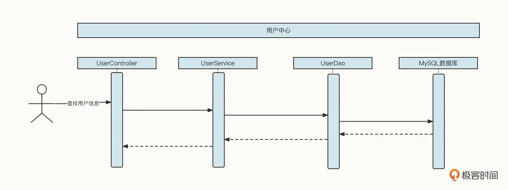
这时候，如果查找用户信息这个 API 的调用频率增加，并且在整个业务流程中，同一个用户的信息会多次被调用，那么我们可以引入缓存机制来提升性能：
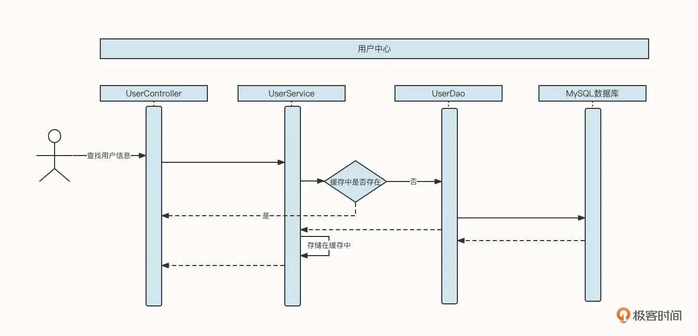
也就是说，在 UserService 中引入一个 LinkedHashMap 结构的内存容器，用它存储已经查询到的数据。如果新的查询请求能命中缓存，那么我们就不需要再查询数据库了，这就降低了数据库的压力，将网络 IO、磁盘 IO 转变为了直接访问内存，性能自然而然也提升了。
但上面这个方案实在算不上一个优秀的方案，因为它考虑得非常不全面，存在下面这几个明显的缺陷：内存容量有限、容易引发内存溢出，缓存在节点之间不一致，数据量非常庞大。
上面每一个问题都会带来巨大的影响，如果我们每做一个业务系统，都需要花这么多精力去解决这些技术问题，那这个成本也是不可估量的。为了解决与缓存相关的技术诉求，市面上也涌现出了一些非常优秀的中间件。缓存中间件经历了从本地缓存到分布式缓存的演变历程，我们先来看本地缓存中间件。
本地缓存中间件
本地缓存与应用属于同一个进程，主要的优势是没有网络访问开销，其中 **Ehcache、Guava Cache 与 Caffeine 是 Java 领域当下比较知名的本地缓存框架。**由于 Ehcache 比较耗磁盘空间，并且在进程宕机后容易造成缓存数据结构破坏，只能通过重建索引的方式进行修复，所以目前我们主要使用 Guava Cache 和 Caffeine，他们之间并没有明显的优劣势。
尽管内部实现细节不同，但本地缓存中间件基本都需要包含下面三个功能。
- 支持大容量。
它们基本都会采取内存 + 磁盘两级存储模型，其中内存存放热数据，磁盘存放全量数据。
- 过期 / 淘汰机制。
评估缓存对性能提升程度的一个重要依据就是缓存的命中率。如果用户每次访问都无法命中缓存，相当于缓存没有起到效果，存储的数据都是“无用”的数据，只会带来存储空间的浪费。所以，必须引入缓存过期机制，删除不常用的数据。
- 基本的数据统计功能。
监控数据的主要目的是检测当前缓存的工作状态是否健康，需要检测的内容包括缓存命中率、内存空间使用情况、磁盘空间使用情况等。
总的来说，本地缓存对单体应用非常友好，但对分布式应用就会显得有点浪费资源，为什么这么说呢？你可以先看看下面这张图。
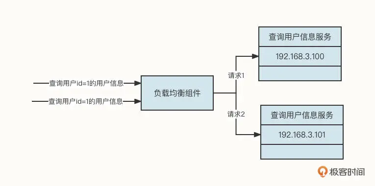
在这张图中，当连续两次查询用户 ID 为 1 的用户信息时，受到负载均衡组件的影响，其中一个请求会转发到 192.168.3.100，另外一个请求会转发到 192.168.3.101。这样，同一个用户的信息会在两台机器上分别缓存一份数据。
而且，如果数据发生变化，也需要通知多台机器同时刷新缓存，这就造成了资源浪费。因此，本地缓存更适合存储一些变化频率极低，数据量较小的场景，诸如基础数据、配置了类型的数据缓存等。
分布式缓存中间件
本地缓存属于单进程管理的范畴，存在单点故障与资源瓶颈，无法应对数据的持续增长。为了适应分布式架构的特点，市面上也出现了一批基于内存存储的分布式存储框架。
由于分布式缓存与应用进程分属不同的进程，存在网络访问开销，所以几乎各个缓存中间件都是基于内存存储的系统，它们的存储容量受限于机器内存容量。
为了解决存储方面的瓶颈，各个分布式缓存中间件都支持集群部署。分布式缓存中间件中比较出名的非 Redis 与 Memcached 莫属。我们以 Redis 为例，来看一下经典的分布式缓存部署架构：
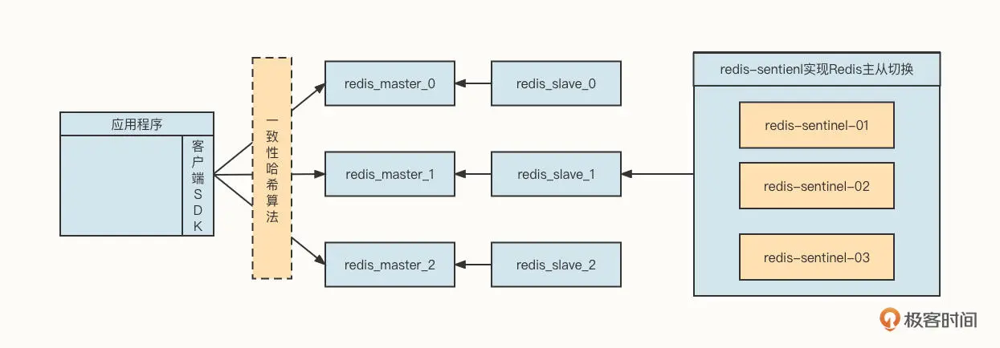
从这张图中，我们可以提取出下面几个要点。
首先，客户端通常会使用一致性哈希算法进行负载均衡，主要是为了提高节点扩容、缩容时的缓存命中率。
第二，Redis 采用主从同步模式，这可以提升数据的存储可靠性。如果是像 Memcache 这种不能持久化的中间件，进程一旦退出，存储在内存中的数据将会丢失，就要重新从数据库加载数据，这会让大量流量在短时间内穿透到数据库，造成数据库层面不稳定。
第三，单台 Redis 受限于机器内存的容量限制，通常会采用集群部署，即每一个节点存储部分数据。
第四，为了提升 Redis 的 master-slave 高可用性能，降低由于 master 节点宕机导致的集群写入节点数量减少问题，通常会引入哨兵集群，使 master-slave 主从自动切换，进一步提升缓存中间件的高可用性。
那么，同为分布式缓存中间件，Redis 和 Memcached 又有什么区别与联系呢？二者的共同点是，它们都是基于内存访问的高性能缓存存储系统，具有高并发、低延迟特性。
但它们的不同点也很多，我总结为了以下四点。
-
数据类型：Redis 支持丰富的数据类型，不仅支持 key-value 的存储结构，还支持 List、Set 等复杂数据结构，而 Memcache 只支持简单的数据类型。
-
数据持久化：Redis 支持基于 AOF、快照两种数据持久机制，持久化带来的好处便是进程重启后数据不会丢失，能有效防止缓存被击穿的风险；Memcache 不支持数据持久化。
-
分布式存储：Redis 自身支持 master-slave、Cluster 两种分布式存储架构，而 Memcache 自身并不支持集群部署，需要使用一致性哈希算法来构建集群。
-
线程模型：Redis 命令执行采用单线程，故 Redis 不适合大 Value 值的存储，但借助 Redis 单线程模型可以非常方便地实现分布式锁等功能；Memcache 基于多线程运行模型，可以充分利用多核 CPU 的并发优势，提升资源的利用率。
讲了这么多，要一下记住可能有点难度，我给你画了两张图，总结了刚才不同中间件的差异、适用场景，你可以保存下来随时回顾：
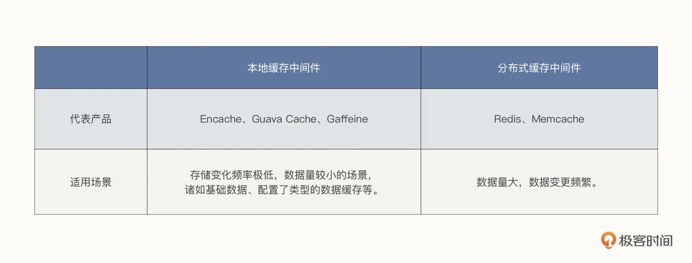
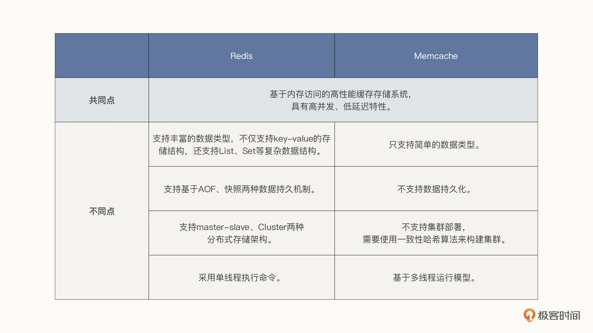
一句话总结，缓存框架是不断在演进的，在项目中引入缓存相关的中间件技术绝对是一个明智之举。在数据量较少，并且变更不频繁时，我建议你采用本地缓存，其他情况建议使用分布式缓存。
那如何在 Redis 与 Memcache 中进行选型呢？虽然技术选型我们需要结合业务场景来看，但从上述功能的对比来看，Redis 基本在各个对比项中对 Memcache 呈“压制”态势，所以多数情况下，我建议你使用 Redis。
全文索引中间件
Elasticsearch 是一个基于 Apache Lucene 的开源且支持全文搜索的搜索引擎。
Lucene 被公认为迄今为止性能最强、功能最齐全的搜索引擎库。但 Lucene 只是一个类库，只提供单机版本的搜索功能，无法与分布式计算、分布式存储等协调展开工作。为了适应分布式的架构体系，Elasticsearch 应运而生。
Elasticsearch 提供了强大的分布式文件存储能力、分布式实时分析搜索能力、实时全文搜索能力、强大的集群扩展能力，PB 级别的结构化和非结构化数据处理能力。
Elasticsearch 在分布式架构中有两个最常见的应用场景，一个是宽表、解决跨库 Join，另一个就是全文搜索。接下来我们分别展开介绍。
在数据库领域，如果一个表的数据量庞大，我们通常会引入分库分表技术以提高可用性。但这会带来一个新的问题，就是数据关联、报表等查询会变得无比复杂，性能也无法得到保障。
我们以订单场景为例。在一个订单中通常会包含多个商品，一个非常经典的设计策略是会创建 t_order 与 t_order_item 表，其中 t_order_item 是 torder 的子表。但如果我们使用了分库分表技术，关联查询将变得非常复杂：
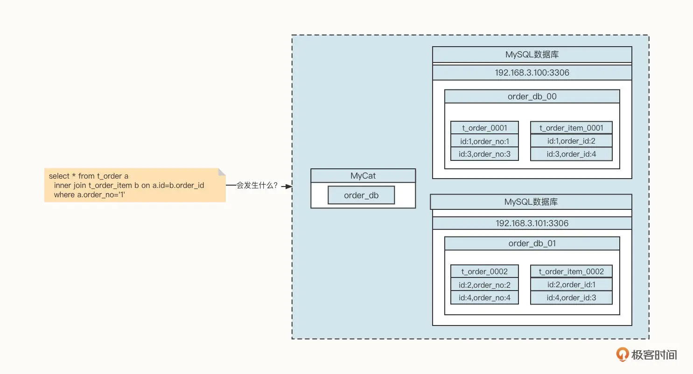
看一下上面这张图片，想象一下，如果应用程序发送一条 Join 语句给数据库，会发生什么事情呢？
由于订单编号为 1 的订单信息存储在 order_db_00 中，但与这条订单关联的订单字表却存储在 order_db_01 中，而 Join 操作需要的笛卡尔积操作存在于不同的数据库实例中，所以我们就要将多个数据库中的数据统一加载到内存中。这就需要创建众多对象，如果需要加载的数据庞大，无疑会导致内存竞争，垃圾回收加剧，性能将直线下降。
我相信你一定能想到这个问题的解法：用 ER 分库思想，让具有关联性的表使用字段相同的分片算法。例如上面的示例，我们可以将 t_order、t_order_item 两个表的分库字段都设置为订单 ID，这样一来，同一订单 id 的父子数据都在同一个数据库实例中，就避免了跨库 Join，可以让性能得到很大提升。
但真实的应用场景比这个要复杂很多，面对的用户不同，他们的诉求也不一样。
我们还是说回订单系统。
-
从买家的角度出发，我们希望同一个买家的订单数据（父子关联表）能够采用同样的分库策略，以此保证同一个买家的订单关联数据存储在同一个库中，这样买家在查询订单时不必跨库。
-
但是如果采用这种策略，从商家的角度出发就会发现，商家在查询商家订单信息、商家日订单报表、月订单报表时要查询多个数据库，甚至可能产生跨库 Join 的风险。这无疑会降低性能，严重时会使整个数据库变得不可用。
用一句话概述就是，分库分表在面对多维度查询时将变得力不从心，那该如何解决呢？
我们通常会引入数据异构 + 宽表的设计方案：
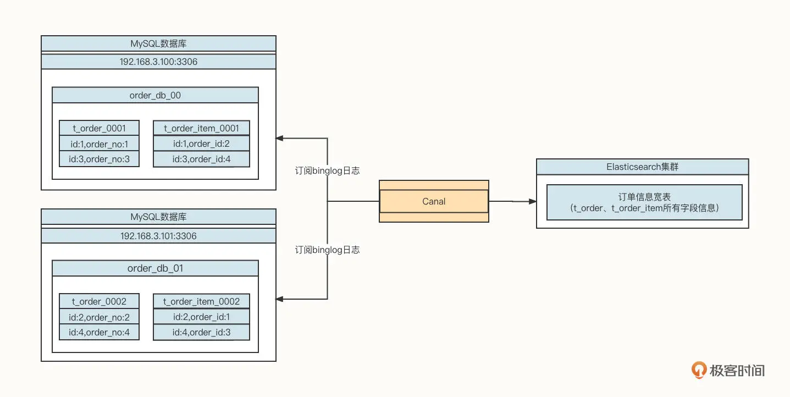
我们需要引入 Canal 数据同步工具，订阅 MySQL 的 Binglog，将增量数据同步到 Elasticsearch 中，实现数据访问层面的读写分离。
ElasticSearch 另外一个场景就是全文搜索。
我们以电商场景为例，用户在购买商品之前通常需要输入一些关键字搜索出符合自己期望的数据，例如商品表的表结构如下图所示：
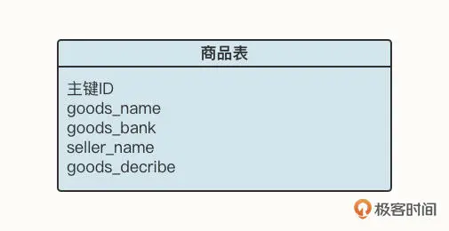
如果我们要查询关键字为“苹果电脑”，基于关系型数据库，我们通常会写出这样的 SQL 语句：
select * from goods a where a.goods_decribe like '%苹果电脑%'；
运行上述代码，如果商品数量少那倒没关系，但如果是淘宝、天猫、京东等一线电商平台，需要存储海量商品信息，在商品库中运行上述 SQL，对数据库来说就是一个“噩梦”，因为上述语句并不会走索引，容易很快耗尽数据库链接而导致系统不可用。
这个时候，使用 Elasticsearch 就是一个非常明智的选择。因为 Elasticsearch 的底层是 Lucene，可以对需要查找的字段建立索引，中间还会进行分词处理，进行更智能的匹配。由于 Elasticsearch 底层会为字段建立倒排索引，根据关键字查询可以轻松命中缓存，从而能极大提升访问性能，实现低延迟访问。
分布式日志中间件
随着微服务的兴起、业务量的增长，每一个服务在生产环境都会部署多台机器。例如，在我们公司，光是订单中心的“创建订单”服务就部署了四十多台机器。当遇到生产问题时，如果我们想要查看服务器日志，就会异常困难，因为我们根本不知道发生错误的请求具体在哪台机器上。
在机器数量较少（10 台机器以内）的时候，通常我们可以使用 Ansibe 同时向所有需要采集的服务端执行日志检索命令，其工作示意图如下：
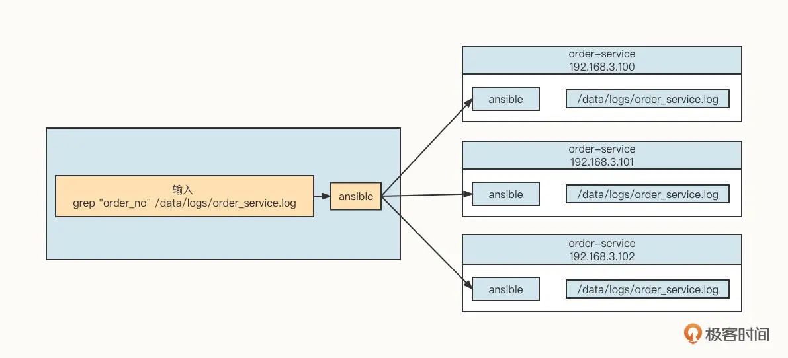
这种方式对于用户来说就像是操作单机模式一样，但是它的缺陷也是显而易见的。
基于 Ansibe 这种命令行等批量运维工具，需要保存目标机器的用户名与密码，安全性会受到影响。
如果要管理的目标机器有成百上千台，这种方式的系统开销会很大，搜索的响应时间很长，几乎是不太可能顺畅使用的。
为了进一步解决这个问题，我们通常需要采集每台服务器的日志，并将它存储在一个集中的地方，再提供一个可视化界面供用户查询。那么问题来了，市面上有这样的中间件吗？
我的回答是，必须得有，它就是大名鼎鼎的 ELK。我们可以先看下这张 ELK 的工作架构图：
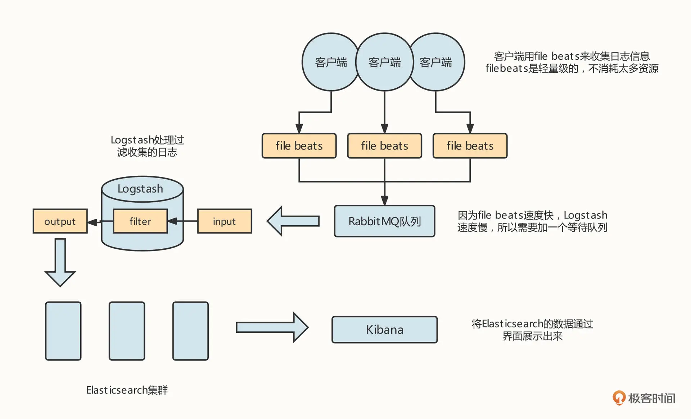
我们需要在需要进行日志采集的机器上安装一个 filebeat 工具，用来采集服务器的日志，并将它们存储到消息中间件中。然后，在需要采集的机器中安装 Logstash 进程，通过 Logstash 将日志数据存储到 Elasticsearch 服务器，用户可以通过 Kibana 查询存储在 Elasticsearch 中的日志数据，这样，我们就可以有针对性地查询所需要的日志了。
总结
好了，这节课就讲到这里。这节课，我们重点介绍了缓存、全文索引、分布式日志三类中间件。
缓存是性能优化的一柄利器，我们重点阐述了缓存技术从本地缓存到分布式缓存的演进之路，各种技术引入的背景以及解决方案，你可以根据自身情况，选择适合自己的缓存中间件。
另外，搜索相关技术也是应用系统必不可少的一环。随着微服务技术和数据库分库分表技术的兴起，数据写入效率大大提高，但与此同时，数据查询也面临更大的挑战，而基于 Elasticsearch 的数据异构架构方式能非常方便地解决数据查询的性能问题。
在分布式环境下，传统的应用日志查询方式也变得越来越难使用，ELK 日志技术则为日志搜索带来了新气象，是分布式日志中间件的不二之选。
课后题
学完这节课，我也给你出一道课后题吧。
数据异构是一种非常经典的架构方式，请你尝试使用 Canal 或者 Flink-CDC，将数据从 MySQL 同步到 Elasticsearch 中。
欢迎你在留言区与我交流讨论，我们下节课见。
© 2019 - 2023 Liangliang Lee. Powered by Vert.x and hexo-theme-book.